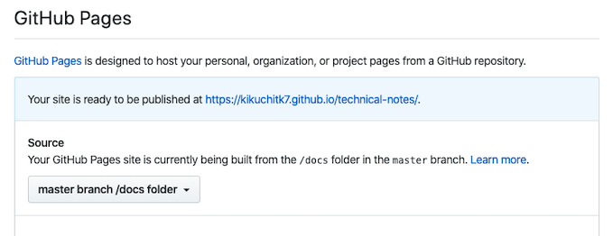

Sphinx と GitHub Pages を使ってドキュメントを公開する¶
前提¶
macOS Catalina バージョン 10.15
Python 3.7.4
Public な GitHub repository を作成済
環境構築 (ローカル)¶
公開用の repository を clone する。
$ git clone git clone https://github.com/kikuchitk7/technical-notes.git
clone したディレクトリに移動する。
$ cd ./technical-notes
Sphinx を pip でインストールする。
$ pip install -U sphinx
Collecting sphinx
(中略)
Installing collected packages: sphinxcontrib-devhelp, sphinxcontrib-applehelp, sphinxcontrib-htmlhelp, sphinxcontrib-jsmath, sphinxcontrib-qthelp, sphinxcontrib-serializinghtml, sphinx
Successfully installed sphinx-2.2.0 sphinxcontrib-applehelp-1.0.1 sphinxcontrib-devhelp-1.0.1 sphinxcontrib-htmlhelp-1.0.2 sphinxcontrib-jsmath-1.0.1 sphinxcontrib-qthelp-1.0.2 sphinxcontrib-serializinghtml-1.1.3
拡張テーマ (sphinx_rtd_theme) をインストールする。
$ pip install sphinx_rtd_theme
Collecting sphinx_rtd_theme
(中略)
Installing collected packages: sphinx-rtd-theme
Successfully installed sphinx-rtd-theme-0.4.3
sphinx-quickstart でプロジェクトを作成する。
$ sphinx-quickstart
Sphinx 2.2.0 クイックスタートユーティリティへようこそ。
以下の設定値を入力してください（Enter キーのみ押した場合、
かっこで囲まれた値をデフォルト値として受け入れます）。
選択されたルートパス: .
Sphinx 出力用のビルドディレクトリを配置する方法は2つあります。
ルートパス内にある "_build" ディレクトリを使うか、
ルートパス内に "source" と "build" ディレクトリを分ける方法です。
> ソースディレクトリとビルドディレクトリを分ける（y / n） [n]: y
プロジェクト名は、ビルドされたドキュメントのいくつかの場所にあります。
> プロジェクト名: docs
> 著者名（複数可）: kikuchitk7
> プロジェクトのリリース []:
If the documents are to be written in a language other than English,
you can select a language here by its language code. Sphinx will then
translate text that it generates into that language.
For a list of supported codes, see
https://www.sphinx-doc.org/en/master/usage/configuration.html#confval-language.
> プロジェクトの言語 [en]: ja
ファイル ./source/conf.py を作成しています。
ファイル ./source/index.rst を作成しています。
ファイル ./Makefile を作成しています。
ファイル ./make.bat を作成しています。
終了：初期ディレクトリ構造が作成されました。
マスターファイル ./source/index.rst を作成して
他のドキュメントソースファイルを作成します。次のように Makefile を使ってドキュメントを作成します。
make builder
"builder" はサポートされているビルダーの 1 つです。 例: html, latex, または linkcheck。
下記がインストールされる。
$ tree .
.
├── Makefile
├── README.md
├── build
├── make.bat
└── source
├── _static
├── _templates
├── conf.py
└── index.rst
4 directories, 5 files
Makefile を修正する。
BUILDDIR を "docs" に変更する。
BUILDDIR = docs注釈
GitHub Pages でこの"docs" ディレクトリを公開する。
build のコマンドを変更する。
#%: Makefile # @$(SPHINXBUILD) -M $@ "$(SOURCEDIR)" "$(BUILDDIR)" $(SPHINXOPTS) $(O) html: @$(SPHINXBUILD) -b html "$(SOURCEDIR)" "$(BUILDDIR)" $(SPHINXOPTS) $(O)警告
-M オプションでは出力フォルダの指定ができそうになかった。 スマートな方法ではないが元々の記載をコメントアウトして、 -b オプション版を追記した。
conf.py を修正する。
ファイルの頭の方に import 文を追記する。
import sphinx_rtd_theme
"extentions" に拡張モジュールを追加して下記とする。
extensions = [ 'sphinx_rtd_theme', 'sphinx.ext.mathjax', 'sphinx.ext.todo', 'sphinx.ext.githubpages', ]"html_theme" を 'alabaster' から 'sphinx_rtd_theme' に修正する。
html_theme = 'sphinx_rtd_theme'
上記の付近に "html_theme_path" を追加する。
html_theme_path = [sphinx_rtd_theme.get_html_theme_path()]
ビルドする。
$ make html
docs ディレクトリに .nojekyll を作成する。
$ mkdir ./docs
$ touch ./docs/.nojekyll
変更内容をステージ、コミット、プッシュする。
$ git add -a
$ git commit -m 'Initial commit'
$ git push origin master
GitHub の設定¶
GitHub Pages の公開設定をする。

GitHub の Settings で、 Source を "master branch / docs folder" に変更する。
GitHub Pages の確認¶
公開されたページ(https://kikuchitk7.github.io/technical-notes/)を確認する。